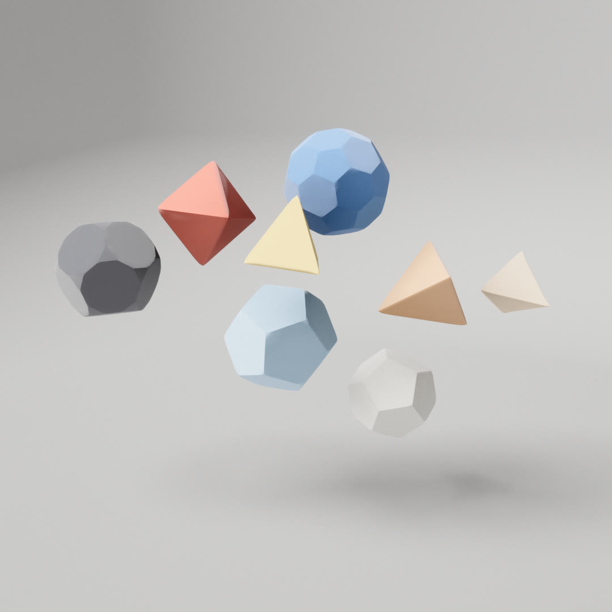

How Fold folds
Paper polyhedra fold up from flat nets, float and bump into each other, then unfold, melt into a new net and fold into a new solid. Every crease is an exact circular fillet, and every flat net is a real unfolding of the solid it becomes.
See it live
Paper solids that fold themselves
Day 1's prompt was Fold. A handful of paper polyhedra float in a pale studio. Each one unfolds into a flat net, the net melts into the net of the next solid, and it folds back up with rounded creases, bowed faces and softly rounded peaks.
The solids grow from a tetrahedron by Conway operators: the Platonic and Archimedean solids, their duals, pyramids pushed out of every face or dimpled into it, and star solids. Each is a convex hull in Ammo with zero gravity and a spring pulling it home, so the shapes drift and bump into each other: drag one to throw it, tap empty space to scatter them. The paper is egg white, white with a coloured accent, or mixed origami colours.
The work splits three ways: finding a net that unfolds without overlapping, building the folded paper with an exact fillet at every crease, and morphing one flat net into the next. The shared pipeline renders the paper, with a fibre texture baked once.
Every solid grows from a tetrahedron
The solids are built with Conway operators, which only describe topology. Ambo puts a vertex at every edge midpoint. Truncate cuts every edge at a third and two thirds. Gyro turns each n-gon into n pentagons. Kis raises a pyramid on every face. Reciprocal swaps faces and vertices exactly: each face plane becomes the vertex at its pole about the unit sphere. Each Conway step is followed by Hart's canonicalization: every pass nudges each edge so its closest point to the origin moves toward the unit sphere, recentres the solid, and pulls every vertex halfway onto each of its face planes, for up to 40 000 passes until nothing moves by more than 10⁻¹². Reciprocals need none, because the polar reciprocal of a canonical solid is already canonical.
Day 1 offers the five Platonic solids, the cuboctahedron, the truncated tetrahedron, octahedron, dodecahedron and icosahedron, the rhombic dodecahedron, the triakis tetrahedron and the small stellated dodecahedron; the library builds all thirteen Archimedean and thirteen Catalan solids and four Kepler–Poinsot stars. Each solid is built once on first use and cached per face variant, so shapes of one kind share the solid while each searches its own net. Kis is applied after scaling to circumradius 1, so pyramid shapes reach past it, to about 1.15 on a dodecahedron.
Star solids such as the small stellated dodecahedron have faces that pass through each other. For those, only the outer visible surface is kept. Each face is cut by every other face's plane, cells hidden behind another face are dropped, and the rest are welded back together.
Where each solid comes from
Conway steps (ambo, gyro, truncate) are followed by canonicalization; reciprocals are exact. Archimedean solids come from truncate, ambo, ambo∘ambo and truncate∘ambo of T, O, C, D and I; the snubs are reciprocal(canon(gyro C or D)). The Catalan solids are their reciprocals: each has the same number of edges as its partner, crossing it at right angles where both touch the midsphere.
kis(solid, 0.35): an apex 0.35 above every face centroid. On a cube the apex reaches 0.93 from the centre.kis(solid, −0.18): the apex is pushed in, so every face becomes a shallow dimple with valley creases.Finding the least-overlapping net
To unfold a solid, cut some edges and keep the rest as hinges, so the faces form a tree. Flattening each face onto its parent by rotating it about their shared edge lays the whole solid in a plane. Most trees overlap. The net search tries about 30 of them and keeps the one with the fewest overlapping face pairs, then the smallest radius:
A cube folding from its net
Each child face turns about its hinge by φ = f·θ, where θ is the hinge's full angle (90° on a cube). Transforms compose from the root face outward. Hinges deeper in the tree start later, which the next chart shows.
Timing
A hinge at depth d moves with f = easeInOutCubic(clamp((t − 0.6·delay) / 0.4)), with delay running from 0 next to the root to 1 at the deepest hinge. So the first hinges fold during the first 40 % of the animation and the last ones during the final 40 %. A flat net is drawn at 60 % of its size and grows back to full size by t = 0.625. At t = 0.65 the body becomes solid again for the physics.
One change of shape
Changing Solid, Faces, Colors, Count or Size (or turning a phone between portrait and landscape) unfolds the old shapes (1.1 s), morphs the flat nets into the new ones (1.8 s), then folds them up (1.8 s). A change made during a transition, or while paused, waits for it.
When a transition starts, every shape becomes kinematic wherever it has drifted to: it can't be grabbed and its velocity is zeroed. Once the old shapes are flat and the new geometry is built, the new shapes are created flat, kinematic and hidden at their homes, and one sheet per pair of old and new shape morphs between them. If the new layout has more shapes, a sheet grows from a point; if fewer, one shrinks to nothing. A kinematic shape turns by the same small rotation as its home orientation each frame, so when the refold passes 0.65 and it turns dynamic it sits exactly on its home pose with zero speed, and nothing jumps. If a build step fails, the transition is dropped and the new layout appears folded at once.
The geometry is built by generators that yield between stages: after each greedy tree, every four steepest-edge attempts, each tree scored, every batch of about 6000 face vertices, and every 24 rows of the morph grid. Each frame of the unfold gives the builder 5 ms minus what that frame's fold update took, never less than 0.5 ms, so on a slow device the flat nets wait longer instead of a frame stalling. Each new buffer is also drawn once, empty, a frame before it is needed, so three.js uploads it then and the upload never lands on the frame where a sheet or shape first appears.
A flat net lies in the shape's own plane. At fold 0 it is rotated so its root face points up, turned so its long principal axis runs along X, and centred; as it folds, that frame slerps back to the solid's own. The paper's texture coordinates are the flat net's X and Z in this frame, so the grain runs across the whole net like one sheet and stays attached to the paper as it folds. The morph sheet uses the same coordinates, so the grain never jumps between net, sheet and solid.
Creases are exact fillets
Real paper never folds to a knife edge. Each hinge is a strip of 6 segments (4 on phones) that bends as an exact circular arc. The faces on either side retreat from the hinge line by a distance a, and the strip joins them with an arc of radius a · cot(φ/2), where φ is the current fold angle. When the fold is flat the strip is a straight band of width 2a. Fully folded, the radius is nominally 0.072 of the mean edge on every hinge whatever its angle, because a is chosen as 0.072·ē·tan(θ/2). That is 0.12 × the Crease slider, varied ±35 % per hinge, and capped so the taper fits inside small faces and sharp corners. While a hinge closes, its offset factor goes from a looser 0.103 to 0.072.
A crease in cross-section
A cube hinge (θ = 90°), drawn about 5× larger than the paper around it. The dots are the strip's 7 vertex columns at angles φ·j/6. Their normals are the parent face's normal rotated by the same angle, so the shading is smooth across the fold.
Along the edge, the fillet tapers to nothing at both ends, so the faces still meet at the corners and the solid closes. The strip has 8 rows; the outer three at each end follow sin(π/2 · min(1, s/0.2)). Cut edges get the same rows, so the faces on both sides of a seam share their boundary points exactly.
One hinge from above
Bowed faces
Each face is a centre vertex and 8 rings (fewer on small faces), denser toward the rim. A face bows outward like a slightly pillowed sheet: the height is smoothstep(B), where B is the product of the distances to each edge line, normalised to 1 at the centroid. It is 0 on every edge, so the bow never fights the creases, and its gradient is exact, so the normals are too. The amplitude is 0.012 of the mean edge times 0.5–1, randomised per face, and eases in with the fold, so flat nets are flat.
No thickness
The paper is a single surface drawn from both sides. FoldedPaper can build a back sheet and stitch the cut edges with a rim, but Day 1 leaves that thickness at 0. Instead, once the fold passes 0.85, back faces darken by 75 % and lose their sheen, so a glimpse through a seam reads as the dim inside of a closed shape.
Rounded peaks
Convex corners are softened once the fold is 60 % done. Within 0.4 of the shortest edge from the tip, points sink along the corner normal by (√(z² + D²) − z) · window, where z is the depth below the tip and D = 0.04 of the mean edge. The tip itself sinks by exactly D and the window fades the effect out smoothly.
Face rings and bow height
Peak profile
One net melts into another
Between the unfold and the refold, the flat net of the old shape turns into the net of the new one. Both nets become signed distance fields on a 96-cell grid: the union of exact polygon distances for every face. The blend goes through a rounded square with the mean of the two areas. The field is lerped from net A to the square, held, then lerped to net B, and inflated slightly mid-blend (− bulge·4u(1 − u)) so the sheet stays in one piece. Marching squares turns the field into a mesh each frame. Position, rotation and colour are eased from the old shape's pose to the new shape's live pose at the same time.
The 96 cells span the longer side of both nets' combined bounds plus a 5 % margin. Inside a face the distance is the largest of its edge-plane distances; outside it is the exact distance to the nearest edge. Each half of the morph is smoothstep-eased over 40 % of the time, and the inflation is 0.05 of the nets' shorter extent, peaking halfway through each half and zero at both nets and at the square. Grid points are shared between cells, and only the used part of each buffer is re-uploaded.
A cube net becoming a tetrahedron net
The faint outlines are the two nets. The sheet holds the rounded square between t = 0.4 and 0.6.
Zero gravity, springs home
Each folded solid is a Bullet convex hull made from its folded vertices (at most 256 support points), with mass = radius³, restitution from the Bounce slider and friction 0.5. Gravity is zero. Every body is pulled to its home position and orientation by critically damped springs, F = m·(k·(home − x) − 2√k·v) with k = 2.5 for position and 1.5 for rotation. A slow drift made of products of sines nudges each body with random phases, so the group never settles. Spin turns the home orientation itself, so the shapes keep turning even while they fold.
While a shape folds or unfolds it is kinematic: it follows the animation and still pushes the others, but nothing pushes it. Its collision shape is always the folded solid's hull, never the flat net, and the morph sheets have no physics. It becomes dynamic again at a fold of 0.65.
Dragging grabs a folded shape at the point you touched, with a stiff spring (k = 60) toward the pointer on a camera-facing plane. While it is held, the home spring and torque are off, so it tumbles about the grabbed point. Letting go adds an impulse of 0.6 × mass × the smoothed pointer velocity (capped at 12). A quick tap on empty space (under 6 px and 300 ms) sends a burst outward from under the pointer, falling off as 1 / (1 + (d / 0.8)²), so the shapes nearest the tap get the strongest push. Hovering nudges nearby shapes along the view ray.
There is a floor plane at y = −3.1. Homes are kept at least one radius plus 0.2 above it, chosen by rejection sampling up to 60 points in an ellipsoid and keeping the first that clears every placed shape by 0.05, or the best one tried. Bullet steps at a fixed 1/120 s with up to 4 substeps, frames longer than 1/30 s are clamped, and linear and angular damping are 0.08 and 0.12. The rotation spring is scaled by the body's mean inertia instead of its mass. Paused frames don't step at all, and the grab spring is skipped then so force can't pile up.
How fast each spring settles
x(t) = (1 + ωt)·e^(−ωt) with ω = √k: no overshoot, so a thrown shape glides back without bouncing past home.
Photographed paper, baked once
The paper texture comes from two photographed maps, a height map and a tone map. They are baked once into a single tiling texture, 0.35 world units per repeat: height in red, tone in green and the height's slope in blue and alpha. The shader adds a large-scale formation mottle, lifts roughness where the slope varies faster than a pixel can show, and bumps the normal more at grazing angles to the key light, the way paper fibres catch a raking light.
The creases change the paper too. The bump fades out across fillets, and mountain folds are burnished up to 0.08 smoother, broken up by the grain. Concave edges get two kinds of shading. The fillet strip of a valley fold is darkened by up to 15 %. And every vertex stores its distance to the nearest concave edge of its face (as a fraction of the face's inradius) and that edge's bend; the shader darkens occlusion by Crease·√bend at the edge and fades it out by 0.8 of the inradius, so a soft gradient runs into each valley. The bend is eased with the fold in the vertex shader. Only solids with concave edges get this: inverted faces, the stellated dodecahedron, and pyramids that meet in a valley.
The paper is a single double-sided sheet with sheen 0.3 and a little diffuse transmission (0.25), so thin paper glows where light hits its back.
The palettes: white is all egg-white paper; accents keeps 15–40 % white and colours the rest from one or two hues; colorful keeps 0–25 % white and cycles a shuffled list of 16 origami colours, a few of which are shown above. White is always a minority, capped at one less than half the shapes.
The studio
The visible backdrop is a lathe: a floor disc out to radius 10, a quarter-circle sweep of radius 5, then a wall. It catches the floor shadow, a soft emissive fill that rises up the sweep, and a contact darkening pool under each shape computed from its bounding sphere. The camera is kept 1.2 units inside it. Lighting comes from a procedural studio baked into an environment map: a key softbox, a fill and a dim surround. The key's reflection is already in the environment, so its direct specular is turned off to avoid a double highlight. The key comes from (−0.6, 0.85, 0.2) at intensity 17, with a fill of 0.4, a floor of 0.4 and a wall of 0.5. The backdrop casts no shadow and is drawn after the shapes, so its shading is skipped where they cover it.
The shadow camera is fitted by hand every frame. The fit box starts as the whole layout region, then grows to cover every visible shape and sheet, and each of its corners is projected along the light onto the floor before the shadow map is fitted to the result. Because the region is fixed, the shadow frustum and the soft penumbra stay steady while shapes drift.
Each folded shape is also a soft analytic sphere occluder at its centre, 0.8 of its radius, growing in only over the last 15 % of the fold because an open net would shade itself. Every paper surface uses these spheres for contact darkening between neighbours, exp(−2.2·occ) with occ = r²/max(d², r²) × cos, faded out by 4 radii. The floor adds a denser pool under each low shape, 1 − 0.6·k²·exp(−2d²) with k = r / (r + gap).
The image uses exposure 1.8, bloom 0.02, vignette 0.12 and grain 0.025. Indirect light has a 2.4-unit radius and intensity 1.2; AO has power 1.3 and a floor of 0.18, so open flaps keep some light. On every resize the camera moves to the distance that frames the spread plus 1.6 units at that aspect ratio, capped at 14.
| Budget | Mouse | Touch / portrait |
|---|---|---|
| Crease segments | 6 | 4 |
| Face rings | up to 8 | up to 4 |
| Layout spread (x, y, z) | 3.4, 2.0, 1.3 | 1.7, 2.6, 1.2 in portrait |
| Pipeline tier | high: MSAA 4, 2 GI slices | medium: MSAA 2, 1 GI slice |
Crease segments and rings follow a coarse pointer, because folding updates every vertex on the CPU; the tall spread applies to any window taller than wide. Rotating a phone changes the layout, so the shapes unfold and refold into the new arrangement. A capture tier for gallery renders (?capture) uses MSAA 4, 3 GI slices, a 4096 shadow map and 16 accumulated samples.
Paper you can hear
The sound is 24 one-shot paper samples: 10 creases, 2 opens, 4 rustles and 8 taps, all CC0 from freesound.org. Nothing loads or plays until the first pointer, touch, click or key. All voices go through one gain into a gentle compressor (threshold −18 dB, ratio 3), with at most 10 at once. Each play picks a random variant of its set, never the same as last time, at a playback rate of 0.9 to 1.1, from a random source separate from the seed, so sound never shifts the layout.
A transition plays an open when it starts and one crease per old shape, scattered over the first 80 % of the unfold. Up to five rustles play as the sheets begin to morph, and one crease per new shape is scattered over the refold. Each sound is panned by its shape's horizontal position on screen. Collisions play taps: harder hits are louder and lower. A pair stays silent for 0.08 s after a tap. Pausing suspends the audio, so scheduled sounds freeze with the animation; M or the speaker button mutes.
From a collision to a tap
g = min(1, log10(impulse / 0.02) / 2.5), gain 0.15 + 0.6·g, rate 1.1 − 0.2·g (shaded: the random ±10 %). Impulses under 0.02 are ignored, and a tap needs g above 0.05.
Controls
- Drag a shape to grab and throw it; tap empty space for a burst. Drag elsewhere to orbit; scroll or pinch to zoom, between 4 and 14 units.
- Solid: one of twelve solids, or mixed, which draws from the five Platonic solids plus the truncated dodecahedron and icosahedron.
- Faces: plain, pyramids, inverted or mixed. Colors: white, accents or colorful.
- Count: 3 to 12 shapes (default 7). Size: the mean radius (default 0.85), each shape 0.75 to 1.2 times that. These start a transition to a new layout.
- Home spring, Bounce, Drift and Spin change the physics live: the pull home, the restitution of the shapes and floor, the wandering force, and how fast each home orientation turns.
- Crease: the fillet radius and the depth of the valley shading. Every shape is rebuilt in place a quarter second after the slider stops.
- R randomises; M or the speaker button toggles sound.
- Space pauses, Tab hides the panel, P saves a screenshot (Shift+P at 2×).
Every random choice in a layout comes from the seed. While a layout is planned, Math.random is swapped for a generator seeded with the page seed plus ":layout", covering the solids, sizes, homes, orientations, spin axes, colours, face variants and a per-shape seed. That per-shape seed drives the shape's net search, crease jitter and face bow, so two cubes in one layout fold from different nets, and a link with the same seed rebuilds the same scene. The url carries the seed plus any setting that differs from what the seed gives. On load the shapes appear already folded; only later changes animate.